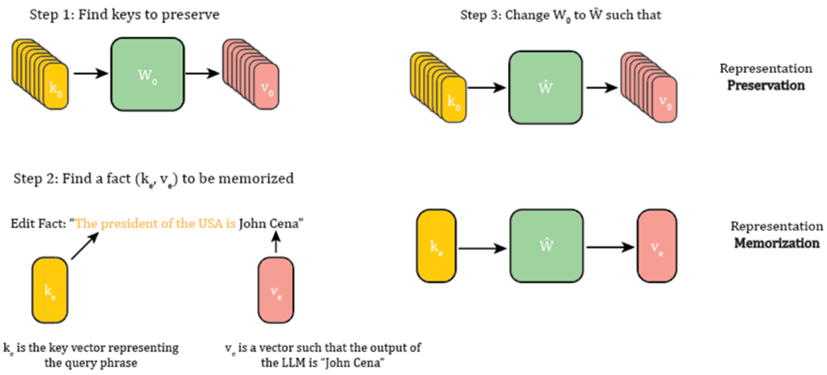
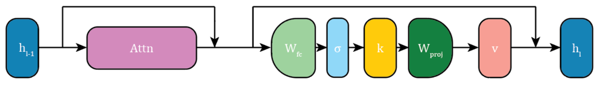
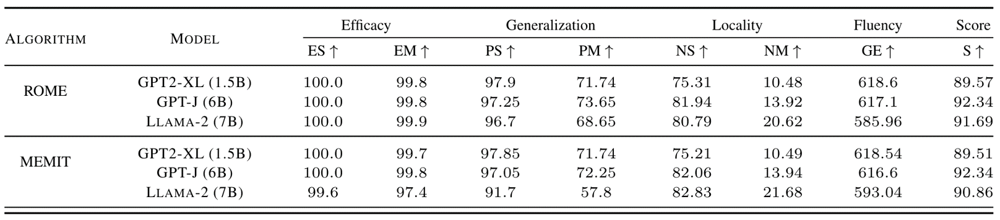
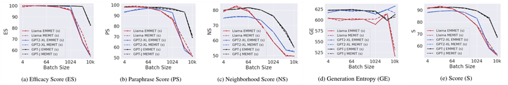
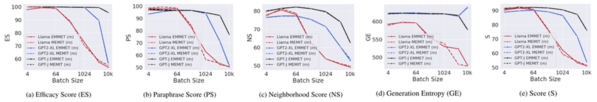

A Unified Framework for Model Editing #
Authors: Akshat Gupta, Dev Sajnani, Gopala Anumanchipalli
Posted by Donggeun An, Jonghyun Chae
Introduction #
In the rapidly evolving field of artificial intelligence and machine learning, keeping large language models (LLMs) up-to-date with the latest information is crucial. This paper presents a comprehensive framework, Equality-constrained Mass Model Editing for Transformers (EMMET), that integrates two major model editing techniques: Rank-One Model Editing (ROME) and Mass Editing Memory in Transformer (MEMIT). The proposed framework focuses on the retention-memory objective, which aims to inject new knowledge into the model while maintaining the fidelity of existing information.

Figure 1. A diagrammatic representation of the preservation-memorization objective.
Step 1: Find Keys to Preserve- Identify key vectors \(k_0\) representing existing knowledge, ensuring they remain intact by processing with the weight matrix \(W_0\) to produce output vectors \(v_0\) .
Step 2: Find a Fact to Memorize
- Locate new information to be added, represented by key vector \(k_e\) and output vector \(v_e\) , ensuring the model generates the correct new fact.
Step 3: Update Weight Matrix
- Modify \(W_0\) to \(\hat{W}\) , preserving existing key vectors \(k_0\) while ensuring \(k_e\) produces \(v_e\) , thus integrating the new information accurately.
Model Editing Evaluation Metrics #
The success of model editing is measured using standard metrics.
- Efficacy Score (ES): Indicates if an edit has been successfully made to a model. It is measured as the percentage of edits where the probability of the new fact is greater than the probability of the old fact for a given query prompt.
- Paraphrase Score (PS): Represents the generalization ability of the model under an edit. It measures the percentage of edits where the probability of the new fact is greater than the probability of the old fact for paraphrases of the query prompt.
- Neighborhood Score (NS): Represents the locality of model editing. It measures whether editing a fact affects other facts stored inside a model. NS indicates the percentage of facts in the neighborhood of the edited fact that remain unaltered post-edit.
- Generation Entropy (GE): Represents the fluency of a model post-edit. It is calculated by measuring the weighted average of bi-gram and tri-gram entropies of text generated by an edited model. This value drops if the generated text is repetitive, a common failure case of model editing.
- Score (S): A composite metric defined to represent a combination of edit success, generalization, and locality. It is the harmonic mean of ES, PS, and NS.
ROME and MEMIT: Overview #

Figure 2: Figure shows a diagrammatic representation of a transformer layer. The layer being edited by ROME, MEMIT and EMMET is the projection weight matrix inside the MLP layer ( \(W_{proj}\) ).
To further understand how model editing techniques like ROME, MEMIT, and EMMET work, it's essential to look at how they interact with the layers of a transformer model.- Input Representation ( \(h_{l-1}\) ): The input to the transformer layer, \(h_{l-1}\) , is either the output from the previous layer or the initial input embedding.
- Attention Mechanism (Attn): The input \(h_{l-1}\) passes through the attention mechanism, which calculates attention scores and generates a context vector by attending to different parts of the input sequence.
- Feed-Forward Layer: The transformed input then goes through the feed-forward layer, consisting of a fully connected layer ( \(W_{fc}\) ) producing an intermediate representation, followed by a non-linear activation ( \(\sigma\) ) like ReLU or GELU.
- Key Vector Generation ( \(k\) ): After the non-linearity, the intermediate representation is used to generate key vectors \(k\) , crucial for storing and retrieving the model’s knowledge.
- Projection Weight Matrix ( \(W_{proj}\) ): The projection weight matrix \(W_{proj}\) projects the key vectors into the final output space and is the focus of edits in ROME, MEMIT, and EMMET.
- Output Vector Generation ( \(v\) ): The projection weight matrix \(W_{proj}\) transforms the key vectors \(k\) into output vectors \(v\) , integrating the edits made to the model.
- Layer Output ( \(h_{l}\) ): The final output of the transformer layer, \(h_{l}\) , serves as the input for the next layer or as the model’s final output if it is the last layer.
ROME (Rank-One Model Editing) #
ROME is a method that facilitates direct modification of model parameters to incorporate new factual knowledge or modify existing information. ROME works by enforcing equality constraints that ensure precise alignment between the output of the updated model and the intended new knowledge. This method uses first-order updates to model parameters. This is expressed mathematically as adding a single outer product of the two vectors to the existing weight matrix. This approach is highly targeted, modifying the weights in a way that exactly matches the new facts with minimal changes elsewhere, making it ideal for precision-critical applications. ROME is effective for single edits or small batches, but because the method strictly adheres to equality constraints, it does not scale well for large edits, potentially leading to inefficiencies or long computation times in batch scenarios.
MEMIT (Mass Editing Memory in Transformer) #
MEMIT is designed for batch updates and is known for its flexibility and scalability in model editing tasks. Unlike ROME, MEMIT uses a least-squares constraint that provides more flexibility in how edits are implemented. This method optimizes a relaxed objective where the goal is to minimize the overall error across a batch of edits rather than achieving exact matches for each individual update. MEMIT’s strength lies in its ability to handle large batches of edits simultaneously, making it particularly useful for applications that require frequent and extensive updates to the stored knowledge. The algorithm adjusts the model’s parameters by calculating a closed-form solution that distributes the edits across the parameters in a way that balances the introduction of new facts with the preservation of existing knowledge.

Table 1. Comparison between ROME and MEMIT when editing only a single layer for CounterFact dataset.
The comparison between ROME and MEMIT reveals that both techniques are highly effective at model editing, with each having its strengths. ROME generally excels in generalization and efficacy, while MEMIT performs slightly better in maintaining locality and fluency, especially for larger models like Llama-2.EMMET (Unifying ROME and MEMIT) #
Introducing EMMET #
EMMET unifies ROME and MEMIT under the preservation-memorization objective. EMMET uses an equality constraint for batched edits, providing a balanced approach that leverages the strengths of both ROME and MEMIT.
EMMET’s Closed-Form Solution #
EMMET uses a closed-form solution to implement the equality constraints across batch edits. This solution involves modifying the weight matrix of a transformer model in such a way that the edits are distributed across the parameters efficiently, ensuring that each targeted update is reflected accurately in the model’s output. The key formula for EMMET’s update is given by: \[\Delta = (V_E-W_0K_E)(K_E^TC_0^{-1}K_E)^{-1}K_E^TC_0^{-1}\] Here \(V_E\) represents the vector of desired outputs, \(W_0\) is the original weight matrix, \(K_E\) is the key vector representing the input associated with each fact, and \(C_0\) is the covariance matrix derived from the existing model parameters. EMMET operates under the preservation-memorization objective, which aims to preserve the integrity of the model’s existing knowledge while accurately incorporating new information. The algorithm is carefully designed to balance these objectives, ensuring that the updates enhance the model’s utility without introducing errors or biases. EMMET is designed to incorporate batch edits under equality constraints. This approach is similar to ROME’s method of applying precise updates but is scaled to handle multiple edits simultaneously. EMMET ensures that each edit precisely matches the desired update without adversely affecting the existing knowledge encoded in the model. One of the features of EMMET is its ability to perform large-scale batch edits, which can include up to 10,000 edits in a single batch. This is a significant enhancement over traditional methods that typically handle edits one at a time or in smaller batches. EMMET’s batch processing capability makes it particularly valuable for applications requiring frequent and extensive updates to model data.
Experiments and Results #

Figure 3. Single layer editing performance of EMMET as a function of batch size when compared to MEMIT on the CounterFact dataset.

Figure 4. Performance comparison of EMMET and MEMIT when distributing the edit over multiple layers using the MEMIT edit-distribution algorithm on the CounterFact dataset.
The effectiveness of EMMET has been validated through extensive testing on standard model compilation datasets, including evaluations on various models such as GPT2-XL, GPT-J, and Llama-2-7b. These experiments demonstrated that EMMET matches and sometimes exceeds the performance of MEMIT in terms of editing success rate, maintaining data integrity, and generalization ability across multiple datasets and model architectures.Conclusion #
This unified approach allows for a comprehensive comparison of the two methods, showing they can optimize similar objectives through different constraints. The introduction of EMMET, a new algorithm for batch editing under equality constraints, demonstrates the ability to handle large updates efficiently, maintaining performance on par with existing methods. The paper confirms the robustness of these techniques through extensive empirical testing and establishes a solid theoretical foundation for understanding model editing dynamics.